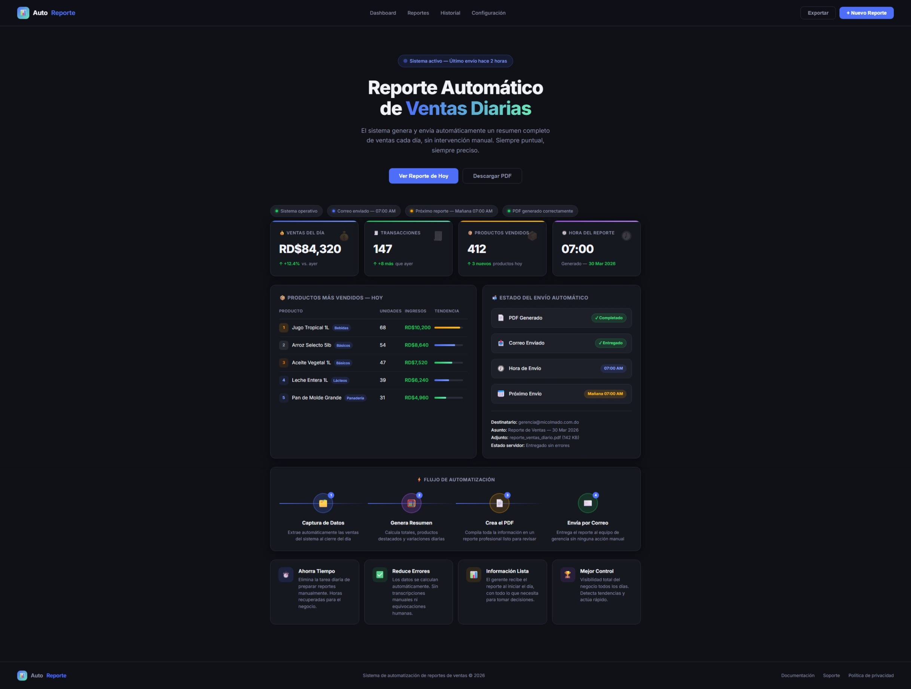
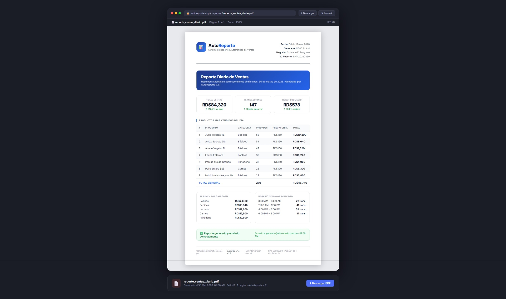

Así luce el sistema en acción

Dashboard principal — AutoReporte
Panel con métricas del día, productos más vendidos, flujo de automatización y estado del envío

Reporte PDF generado automáticamente
Documento con ventas del día, productos, métodos de pago y totales, listo para enviar por correo
¿Qué problema resuelve?
En muchos negocios, alguien tiene que revisar las ventas del día, armar un resumen en Excel o Word, y enviarlo por correo a los encargados. Este proceso toma tiempo, se olvida y los datos a veces no son precisos.
Desarrollamos un sistema que hace todo eso de forma automática: cada día a las 7:00 AM, el sistema accede a la base de datos de ventas, genera un reporte completo en PDF con los números del día anterior y lo envía por correo a los destinatarios configurados.
Nadie tiene que hacer nada. El reporte llega siempre a tiempo, con los datos exactos y con el mismo formato profesional todos los días.
Tecnologías usadas
Métricas del ejemplo
El proceso paso a paso
Captura de datos
El sistema consulta automáticamente la base de datos de ventas del día anterior
Resumen inteligente
Calcula totales, agrupa por producto y método de pago, detecta los más vendidos
Crea el PDF
Genera un documento profesional con tablas, totales y el logo del negocio
Envío por correo
Envía el PDF adjunto al correo de los gerentes o encargados configurados
Todo lo que incluye el sistema
Envío automático diario
El reporte se genera y envía todos los días a la hora configurada, sin que nadie tenga que hacer nada.
Dashboard en tiempo real
Panel visual con las métricas del día: ventas totales, unidades, transacciones y productos más vendidos.
PDF con formato profesional
El documento incluye logo, tablas ordenadas, métodos de pago y totales. Listo para archivar o presentar.
Estado del envío visible
El dashboard muestra si el PDF fue generado, el correo enviado y la hora exacta de entrega.
Datos siempre precisos
Al tomar los datos directo de la base de datos, se eliminan los errores humanos en el cálculo manual.
Próximo envío programado
El panel muestra la fecha y hora del próximo reporte para que los gerentes sepan cuándo recibirlo.
Tecnología utilizada
| Capa | Tecnología | Para qué se usa |
|---|---|---|
| Dashboard | HTML5 CSS3 JavaScript | Panel visual con métricas, tabla de productos y estado del sistema |
| Generación PDF | HTML → PDF CSS Print | Convierte el reporte HTML en un documento PDF listo para enviar |
| Envío de correo | SMTP / Email API | Envía el PDF como adjunto a los destinatarios configurados |
| Automatización | Tarea programada Cron Job | Ejecuta el proceso diariamente a la hora definida sin intervención manual |
| Tipografía | Inter Google Fonts | Fuente moderna y legible tanto en el dashboard como en el PDF impreso |
¿Cuántas horas pierdes haciendo reportes manuales?
Podemos automatizar ese proceso para tu negocio. Tú recibes el reporte, nosotros nos encargamos del resto.
Quiero automatizar mis reportes →